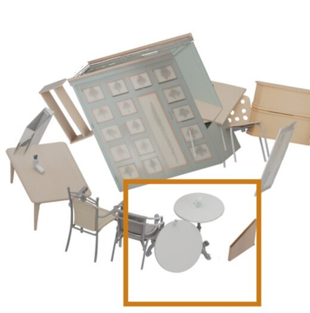
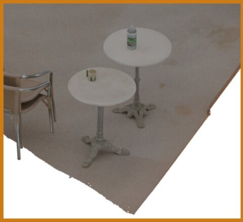
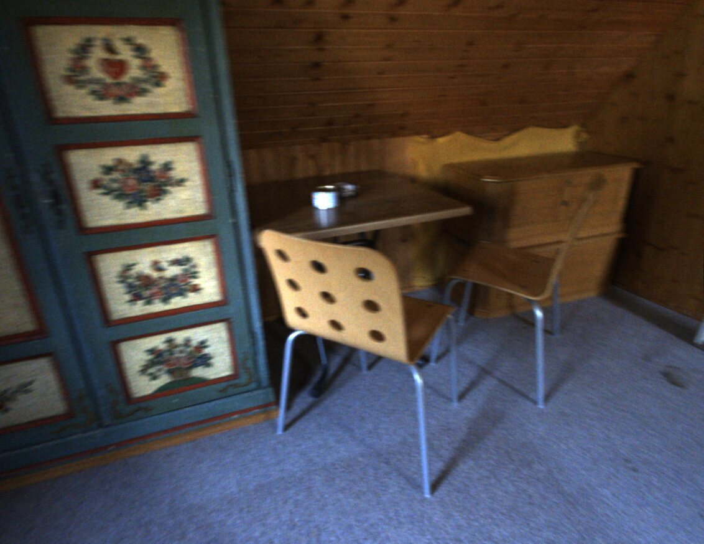
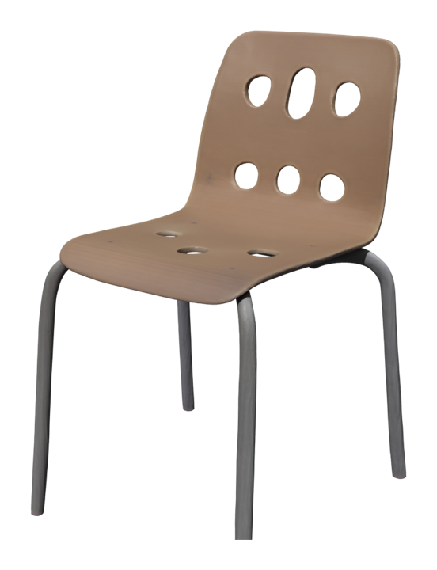

Plausible is not accurate
Images capture how the world looks, but much of its 3D structure remains implicit. 3D foundation models recover points and depth, and generative models fill in unseen shape, yet neither yields a scene made of objects we can move, edit or simulate.
A coding agent can instead write the scene as a program, render it and revise it. But writing a plausible 3D scene is not the same as reconstructing it accurately: camera poses, object geometry and spatial relations must stay consistent with the photos. Each existing route fails in its own way:
The problem
Internet photos, each at its camera.
Berliner Dom · 64 photos · no given poses.
photosfly indirectagent alonecombined
Outdoors, Berliner Dom. Writing OBJ vertices directly from photos gives a coarse block; a detailed Blender run without structural guidance still drifts from the photo at the entrance.


Indoors, SCRREAM. Pipelines that place generated objects from masks and depth produce complete-looking rooms with misplaced, floating or sunken objects.

Photo · wood_chair_a: two sled runners, 3×3 back holes
Generated (SAM 3D) · four separate legs, six back holesA generative model returns a convincing chair, not this chair.
Tokens (M) for one GraspClutter6D scene (000091)
coding agent + SceneAgent skills (as reported)
SceneAgent + Claude Code
838.2 SceneAgent + Stirrup
305.5 SceneAgent + Grok CLI
118.4 SceneAgent + Antigravity
65.2 Coding agents with generic scene skills spend 65–838M tokens converting a single scene (as reported by SceneAgent). Spending more does not make the result match the photos.
Our idea: let the agent reason about the scene, but anchor every decision in specialized geometric tools and in visual and physical checks, organized as reusable policies and skills.
Method
Inspired by traditional reconstruction, our framework follows geometric initialization, scene construction and iterative refinement, but a coding agent orchestrates the process and builds an editable Blender scene. The highlight below walks one example at a time through the pipeline.
RoomInput
01
Planning with policies and skills
A policy specifies a reconstruction workflow: required and conditional steps, their dependencies, verification criteria and budget. A skill describes a reusable procedure: when it applies, which tools it invokes, how its outputs are checked and its limits.
Policies reference skills instead of copying them, so a procedure developed for one setting can be reused in another. The library has two layers: indoor and outdoor families, then dataset-specific policies. For a new input the agent selects the closest policy and writes a task policy.
inputrouter.jsonreviews the original RGB → indoor · outdoor · joint
layer 1 · family
indoor.jsonindoor-spatial-evidence-v118 steps: camera → Gaussian reference → masks → backprojection → assets → room shell → layout → physics → delivery
outdoor.jsonoutdoor-registry-fft-drawing-v214 steps: registry → FFT → cameras → SAM 3D reference → sections → drawings → construct → review → delivery
layer 2 · dataset
sccream.jsonparent: indoor.jsoncapture-ordered rooms: a candidate every ~10 frames → ~20 originals for the agent to review
tabletop routeparent: indoor.jsonsingle photo: the task policy adapts the multi-view camera and Gaussian steps
church.jsonparent: outdoor.jsonchurches: adds required online building research
each tasktask policywritten by the agent from the closest library policy: evidence, applicable skills, checks, budget
policy step → skill
{ "id": "camera",
"capability": "camera",
"depends_on": [],
"contract": "Source-qualified
common-frame cameras and Q" }
capability-catalog.json · camera →
recon-camera-programImplement or run numerical camera tools … K/R/t validation.
skill library · 23 skills
§3.2 Planning · two layers
Policies say what. Skills say how.
A policy lists required and conditional steps, their order, checks and budget.
Tabletopindoor policy · one photo
- original RGB → SAM 3 masks
- native SAM 3D assets
- monocular depth → shared transform
- backprojection → support fitting
- photo / contact review
- physics check → export
Roomindoor policy · multi-view
- camera → Gaussians
- view selection → SAM 3 masks
- backprojection → per-object points
- asset registration
- room shell → layout
- physics · review · delivery
Landmarkoutdoor policy
- registry + FFT
- camera check per view
- native SAM 3D reference
- sections → drawings
- construct · structure first
- geometry review → delivery
§3.2 Planning
One agent, different policies.
A policy says what to do for this kind of input.
02
Initialization and refinement with geometric tools
The agent does not guess geometry. It calls specialized tools (camera recovery, Gaussian splatting, SAM 3 masks, SAM 3D assets, monocular depth, section drawings) and assembles their outputs into one scene.
After each candidate it renders the saved scene from the input cameras, compares renders with the photos, checks contacts and runs a saved-state Bullet simulation, then writes a revision plan for the next candidate. Below: three real runs replayed; drag the bar or click a step.
idle
input · view 234
§3.3 Initialization · SCRREAM 05
From 701 frames to candidate 1
skill –
$ agent · indoor.json · initialization
frames–
views–
objects–
scale–
idle
candidate 1 · view 439
§3.4 Refinement · SCRREAM 05
Five candidates, one fix list each
skill –
idle
input
delivered scene · max over 6 objects
translation–< 5 mm
rotation–< 5°
speed–< 1 mm/s
6 / 6 objects pass ✓
recorded Bullet trajectory · 5 s at 60 fps
§3.3–3.4 · tabletop · indoor policy, one photo
One photo → a settled table
skill –
idle
input
§3.3–3.4 · Arc de Triomphe · outdoor policy
Internet photos → editable Arc
skill –
03
Learning from experience
Execution histories, including failed checks, attempted corrections and their outcomes, reveal gaps in the procedure itself. The agent proposes new skills or revises policies; candidate changes are tested before they enter the library.
Stable objects (%) · three SCRREAM rooms
before → after adding the tabletop support/physics skill
beforeafter
| mean change | stable | F-score | mask IoU | cam. err. |
|---|
| after − before | +77.6 | +0.027 | −0.008 | +0.1 |
Stability rises in all three rooms; geometry and cameras stay nearly unchanged.
Stable objects (%)
gain from the skill: +54.3 (A), +40.7 (B), mean +47.5 points
FIRE3DTools onlyw/o physics skillFull workflow
| penetration (%) ↓ | FIRE3D | Tools | w/o skill | Full |
|---|
| Room A | 88.9 | 2.9 | 53.8 | 0.0 |
| Room B | 59.3 | 6.7 | 21.7 | 12.7 |
scene 000000unchanged library000091policy v1000166policy v2000333policy v3
Generalization · GraspClutter6D (unseen) · 52 RGB-D views per scene
The agent writes its own policy.
Unchanged library first: 8 scenes, surface F1@2 cm 78.6%. Then two paired sequences: a frozen library vs. an adapted one, where after each frozen delivery the agent uses only its own GT-free run evidence to write or revise the class policy and skills.
frozenadaptedtotal tokens, 4 scenes
−32.0% (A), −29.0% (B). F1@2 cm on the three later scenes: 79.9 vs 83.7 (A), 85.5 vs 84.6 (B). One run per scene and arm: observations, not a trend.
Tokens (M) for one GraspClutter6D scene (000091)
coding agent + SceneAgent skills (as reported)ours
SceneAgent + Claude Code
838.2 SceneAgent + Stirrup
305.5 SceneAgent + Grok CLI
118.4 SceneAgent + Antigravity
65.2 Ours, frozen library
120.9 Ours, adapted library
80.6 | surface F1@1 cm | CD (cm) |
|---|
| SceneAgent (best reported) | 60.8 | 2.03 |
| Ours | 70.1 | 1.63 |
Tasks differ: SceneAgent converts 13 RGB views, we reconstruct from 52 RGB-D views.